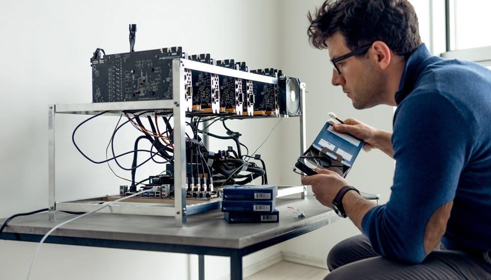

Como minar Ethereum
La mineria de Ethereum y cualquier criptomoneda consiste en la resolucion de problemas matematicos complejos;por este motivo dentro de los sistemas o redes de criptomonedas el
rol de los mineros es importante,y estos deben compartir su tiempo y poder de computacion para llegar a obtener resultados.
Esa serie de procesos forman parte de una prueva de trabajo sobre una red para verificar las transacciones de esta criptomoneda.
Por ese motivo se emiten recompensas durante la
mnineria ;siempre y cuando se puedan completar de forma exitosa las tareas de prueva de trabajo. La aplicacion de poder computacional;es la formula para obtener ganancias tras la obtencion
de metadatos de los encabezados;lo cual ocurre en funcion del hash puede crear una cadena de longitud fija de numeros los cuales son sensibles al uso de mayusculas y minusculas.
el funcionamiento de esta cadena se conoce como hash y el minero puede hallar un hash que coincida con sus objetivos,para que el bloque pueda ser minado;y asi puede transmitir todo
sobre la red;hasta los nodos validen e integren esta transaccion;como partte de la copia de cadenas de bloques.
Minar Ethereum con un hardware específico
hardware de minería de Ethereum o Mining Rig es una máquina especialmente diseñada para minar Ethereum.Los mining rig o rigs de minería consisten en una fuente de alimentación,
una tarjeta madre, una GPU o una tarjeta gráfica y un dispositivo de refrigeración. En general, se puede minar Ethereum con cpu y con gpu.
mining rig de CPU utilizan el procesador de CPU para aplicar algoritmos complejos para resolver los bloques que componen la blockchain.
Los rig de minería de CPU son muy populares entre los mineros principiantes, ya que son muy económicos y fácil de usar. Sólo necesita un ordenador. Sin embargo, es un proceso extremadamente lento.
Otra forma efectiva de minar Ethereum es el uso de un hardware especializado o GPU (unidad de procesamiento gráfico) que es lo que proporciona a los mineros la potencia del hashing.
Los mining rig de GPU utilizan las tarjetas gráficas que no ejecutan algoritmos como los de la CPU, pero completan los procesos de minería en las redes cerradas.
Los mining rig de GPU son superiores a los de CPU en casi todos los aspectos, pero la desventaja es que los primeros son realmente muy costosos. Una mining rig de GPU de calidad puede llegar a costar algunos miles de euros.
Por eso la elección del hardware adecuado para minar Ether es crucial si se quiere reducir significativamente los costes de las facturas de electricidad.